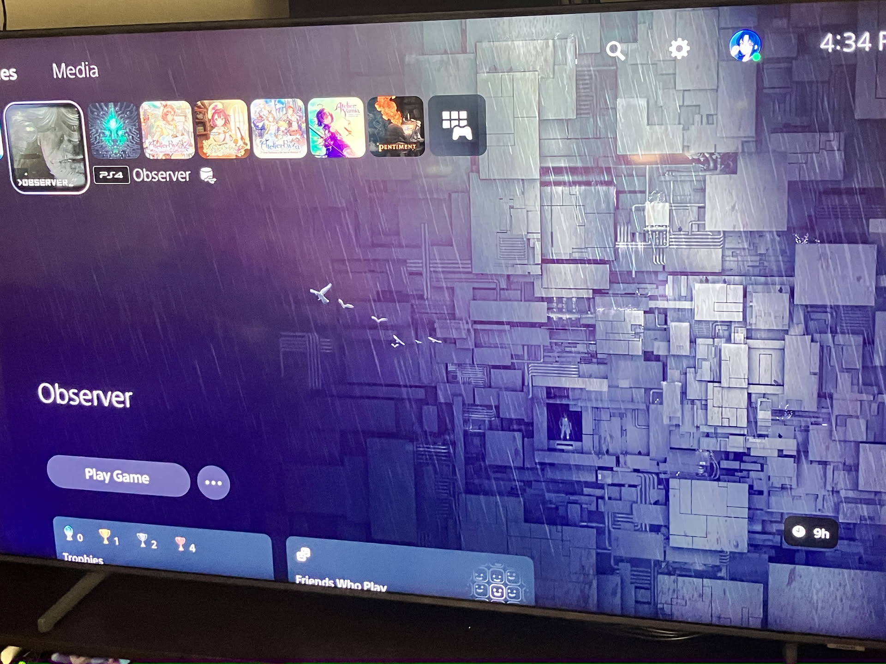

1game1week - Week 19 (5/7/25) - _>observer_
Hey all! It's week 19! (5/7 -> 5/14)
I don't believe I have many real-world updates. I've just been hanging out. How have you all been?
I've recently started dieting. Is that something? It's a bit annoying... I love food. So restricting myself this way is killing me.
Maybe it's not too great to complain though. I've been shedding pounds over the last few weeks.
Nowadays, my main diet consists of chicken breasts and broccoli for lunch, and quesadillas for dinner. It's not all bad...
Last week, I mentioned game pickups would be slowing down. That's gonna start as of today. Right now, I only have a few preorders active. Tokimeki Memorial Remake releases tomorrow, and after that... No new games until late June. It feels a bit crazy, but I hope I can keep up the pace.
Lowering the backlog is the goal, after all... wouldn't do me any favors to just keep buying things.
New games from 4/30 -> 5/6:
None! This is the second time this year this has happened.
Currently, my backlog is at +10 (lower is better).
And onto 1g1w. Once again, a game is considered "beaten" if I've accomplished the main objective of the game.
GAME: _>observer_
PLATFORM: PlayStation 4
STARTED ON: 4/8
BEATEN ON: 4/10
TOTAL PLAYTIME: 9 Hours
Hmm... I'm not sure if I'm really the target audience here.
Oh, I should note: I played the original version of Observer, not the System Redux version.
This game felt more... cinematic than anything. You get a first-person detective character in a cyberpunk world and go around scanning things for clues, rather than actually solving a mystery. Is that reductive?
It ends up becoming more of a walking simulator with a decently solid narrative, I think. Some of the visuals made my eyes strain, and some of the sudden audio jumps made me feel sorry for my neighbors while making me frustrated I had to get the remote and lower the volume, just to have to raise it back up so I could hear Rutger Hauer's monotone voice.
The game was always atmospherically very dark, so I had to turn up the brightness which might've taken away from some of the visual intention.
Character interaction was interesting, but would have been in my opinion a whole lot better had there been actual people to talk to. Most of the time, you're ringing doorbells and talking to people through monitors... even then, you're only shown PNG eyes.
Gameplay was minor exploration of the tenement building, which wasn't too hard to explore as it was very clearly based off an actual tenement building.
It kind of becomes a... "okay, you saw this sequence, so go here. You'll see another sequence. After that, go here and watch another sequence" kind of gameplay loop.
The sequences were interesting. They're essentially "biohacking" scenes where you look into a person's memories for answers on what happened to them. It's like the Black Mirror Season 1 episode, just a bit more gritty.
The aforementioned sequences also include stealth sections. They're okay. Some of them get a bit annoying. There was one where you're being looked for with spotlights by search flying objects (something like a giant drone) and the spotlight hitbox didn't match the actual visual.
Some puzzles were in the mix, but they were decently simple "match this to that" puzzles, so they didn't really do much for me.
Oh, but it had a really cool arcade minigame called With Fire and Sword: Spider. I'd smile really widely whenever I saw a new level pop up. Weirdly enough, it was probably my favorite part about the game.
Maybe I'm not tapped into what this game was trying to tell me, maybe it didn't have anything to tell me in the first place. But I didn't really get anything out of it.
It might also be a stylistic choice, but... do people in the future just not clean up? Maybe organize? I get that the setting was a depressed, moody tenement building, and maybe I'm knitpicking, but... is everyone just a slob now?
I don't really like this post, because I'm not a fan of being overly negative here. So I'll talk about what I did like.
Atmospheric horror is really interesting, and making it first person really adds a great layer of fear in there. Not having much background on the main character (aside from what you're given) almost allows you to just role-play, and pretend that's you. "Okay, I'm now in this situation, learning about all these new investigative tools... what do I do?"
I also played this game with Surround Sound enabled, which made the stealth sequences really interesting as I was able to track the "monster" with both sight and sound.
I guess my main gripe is probably that something feels missing. It feels like a sub-story to something like Cyberpunk 2077. It's a few hours long, so you don't get to learn too much about the world, the characters, their motivation, their lives...
Even the killing victims you investigate just feel like random people. A means to an end, which is solving the mystery or finding Adam.
Like I said... I really don't think I'm the target audience. There are bones of a really phenomenal game in there. It just feels incomplete. I wonder if System Redux helps it up? Builds on the base and makes it feel more complete?
This is just a guess, but it wouldn't surprise me in the slightest if my opinion was completely different if the game was a bit more fleshed out.
That's all for now. See you all next week! Stay safe!

Thanks for reading! If you need to contact me for any reason, please feel free to email me at aru@hoshikawa-aru.com.